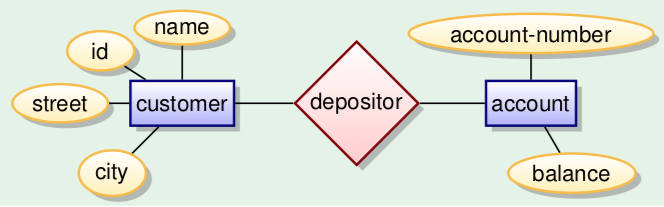
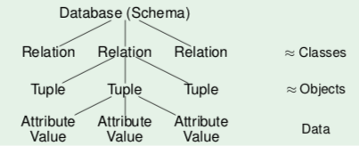
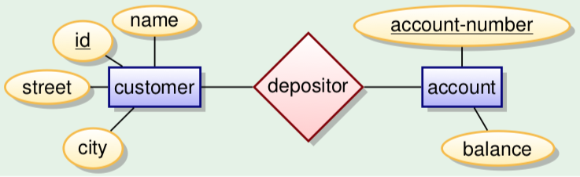
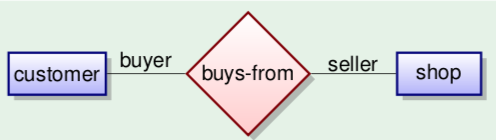
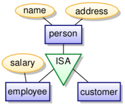
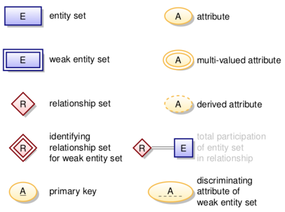
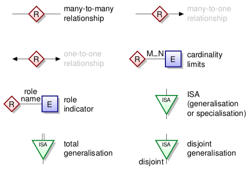
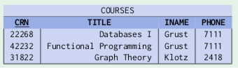
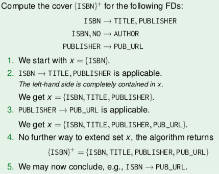
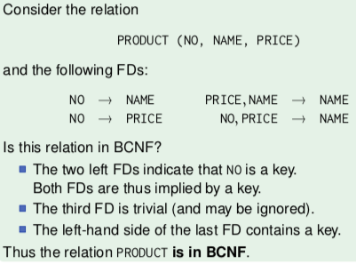

Slides are here
Contents
- What's probably on the exam
- Introduction
- The relational model
- Database design: Conceptual models
- Conceptual to relational models
- SQL Overview
- Aggregations
- Union, conditionals
- Order by
- Joins
- Relational normal forms
probably on exam:
- compute cover {attribute}+ -- needed everywhere
- determine all minimal keys
-
find 'canonical' (minimal) set of FDs:
- use for BCNF decomposition -- splitting
- 3NF synthesis algorithm
- definitions of 4NF and multivalued FDs
database: collection of data with
- logical structure
- specific semantics
- specific group of users
Why not in files? There's no query language, a weak logical structure, no efficient access, almost no protection from data loss, no parallel access control.
ANSI SPARC architecture stores data in three levels:
- View level: application programs hide details of data types. Hide information for privacy/security
- Logical level ('conceptual schema'): describes data and relations among data
- Physical level: how data is stored, in disk pages, index structures, whatever else.
view and logical levels are data representations in relations/tables
a row is a tuple record. the order of the elements of the tuples doesn't matter.
a database instance is a 'snapshot' of a database at a certain point in time.
the database schema is the structure of the database - the relations and constraints.
constraints:
-
primary key (would be underlined) uniquely identifies a row in a table (
customer(id, name, street, city)) -
a foreign key that points to a record in a different table (
account(depository → customer, accountnr)) - data types, constrained data types
- columns constraints (e.g. unique, nullability, counter)
- check constraints (logical expression for a domain)
create an entity relationship model in UML:

then translate that into relations
database management system (DBMS) allows:
- create, modify database
- query data using query language (retrieve)
- support persistent storage of large amounts of data
- allow durability and recovery
- control access to data by users in parallel, without unexpected interactions among users (isolation) or partial actions (atomicity)
multiple users, concurrent access. transactions have ACID properties:
- Atomicity: transaction executes fully or not at all (commit/abort)
- Consistency: database remains in a consistent state where all integrity constraints hold
- Isolation: multiple users can modify database at same time but will not see each other's partial actions
- Durability: when a transaction is successfully committed, modified data is persistent regardless of disk crashes
DBMS have data independence and duplication avoidance.
- Logical independence: logical schema doesn't depend on views
- Physical independence: changing physical schema doesn't break the logical schema
SQL is declarative data manipulation language. The user says which conditions the retrieved data has to fulfill.
It's more concise than imperative languages, thus easier to maintain and cheaper to develop programs in it.
Users usually don't have to think about efficiency, the DBMS will manage that.
Creating a table with constraints:
CREATE TABLE solved (
id INT AUTO_INCREMENT,
name VARCHAR(40) NOT NULL,
homework NUMERIC(2) NOT NULL,
points NUMERIC(2) NOT NULL CHECK (points <= 10),
PRIMARY KEY (id)
);
Creating a view:
CREATE VIEW solved_homework AS
SELECT id, name, homework FROM solved;

all table entries are data values that conform to some selection of data types.
example data types:
-
strings:
-
VARCHAR(n)strings up to n characters, use this if you know a certain maximum length -
TEXTvariable length up to 2 GB (but does not always take up 2 GB)
-
-
numbers:
-
INTinteger -
NUMERIC(n)decimal number with n digits
-
- date and time
-
binary data, like a
BLOB(binary large object)
domain val(D) of a type D is the set of possible values for that type
with SQL, we can create our own application-specific domains (new data types). examples:
-
CREATE DOMAIN EXNUM AS NUMERIC(2) -
CREATE DOMAIN EXNUM AS NUMERIC(2) CHECK(VALUE > 0)
relation schema s (schema of single relation) defines:
- finite sequence A₁..An of distinct attribute names
- for each attribute Ai a data type (domain) Di
written as: s = { A₁ : D₁, ..., An : Dn }
SQL notation:
CREATE TABLE exercises
(CAT CHAR(1),
ENO NUMERIC(2),
TOPIC VARCHAR(40),
MAXPT NUMERIC(2))
a relational database schema S defines:
- finite set of relation names {R₁, ..., Rm}
- for every relation R a relation schema sch(R)
- a set of C integrity constraints
so S = ({R₁, ..., Rm}, sch, C)
used to formalize table rows.
so e.g. in table exercises: (’H’, 1, ’Rel.Alg.’, 10)
let a database schema ({R₁, ..., Rm}, schema, C) be given.
a database state I for this database schema defines for every relation name Ri to a finite set of tuples I(Ri) w.r.t the relation schema Schema(Ri)
relational model allows missing attribute values.
these are represented by NULL. not the same as 0 or an empty string.
used to model scenarios like:
- a value exists IRL but is not known
- no value exists
- attribute is not applicable
- any value will do
without null values, you'd have to split a relation into specific relations, like student_with_email and student_without_email. or the users would have to make up a fake value, which would not be uniform and you'd have no idea how to query.
problems:
- no clear semantics, since null values can be used in many scenarios
-
SQL has three-valued logic (true, false, unknown), so if you want to check for null, you have to say
WHERE A IS NULL
so declaring many attributes as NOT NULL simplifies the program, but only do that if you're sure that there's always a value.
the database should be an image of the relevant subset of the real world. plain definition of tables often allows too many database states.
Integrity constraints (IC): conditions which every database state has to satisfy, restricting the set of possible database states.
In CREATE TABLE, possible constraints:
-
NOT NULL: no value in this column can be null -
Keys: each key value can only appear once -
Foreign keys: values in a column must appear as key values in another table -
CHECK: column values have to satisfy a given predicate
Why specify constraints:
- some protection against data input errors
- document knowledge about database states
- enforce law/company standards
- protect against inconsistency
- simplify queries in programs
key of relation R is attribute A that uniquely identifies tuples in R. this refers to all possible database states, not just the current one.
key constraint is satisfied in database state iff all tuples have different values for A.
once something is declared as a key, the DBMS refuses insertion of tuples with duplicate key values.. this refers to all possible database states, not just the current one.
keys can consist of several attributes, then they are composite keys. if columns A,B form a composite key, there cannot be two tuples t ≠ u which agree in both attributes. keys should never change.
a key constraint becomes weaker (less restrictive) if attributes are added to it.
a key is minimal if no attribute can be removed without destroying the key constraint.
a relation may have more than one minimal key. one is the primary key, which cannot be null. other keys are alternate/secondary.
choosing a primary key: single simple attribute, never updated
use key attributes to uniquely reference a tuple, like a pointer. denoted with arrows:
RESULTS (SID → STUDENTS,
(CAT, ENO) → EXERCISES,
POINTS)
STUDENTS (SID,FIRST,LAST,EMAIL)
EXERCISES (CAT,ENO,TOPIC,MAXPT)
to refer from relation R to tuples of S, add primary key attributes of S to attributes of R. only stable if the logical 'address' of a tuple does not change.
implements a one-to-many relationship.
an existence guarantee is needed.
foreign key constraints in SQL:
CREATE TABLE RESULTS (
...
FOREIGN KEY (SID) REFERENCES STUDENTS(SID)
)
this ensures that every referenced row exists, which ensures referential integrity of the database.
these operations violate the constraints:
- insertion into table with foreign key without matching referenced tuple. DBMS rejects update.
- deletion from table if the tuple is referenced via foreign key. either DBMS rejects, both are deleted (cascade), or foreign key is set to null.
only keys may be referenced. a table with composite key must be referenced by composite key that has same number of attributes.
Three phases:
-
conceptual:
- what do we store
- how are the elements related to each other
- what are the constraints
- models: Entity/Relationship, UML
-
logical:
- transform conceptual schema into the schema supported by the database
- models: relational model
-
physical:
- design indices, table distribution, buffer sizes, etc.
- try to maximise performance of the final system

static, models the structure and not operations. no methods or functions.
- rectangles represent entity sets
-
ellipses represent attributes
- double line - multivalued attributes
- dashed line - derived attributes
- diamonds are relationship sets
- lines link attributes and relationship sets to entity sets
- underline indicates primary key attributes
entity is an abstract object (person, company, event..)
entitties have attributes (names, addresses, ...)
entity set is is a collection of similar entities (those sharing the same attributes).
represented by a set of attributes - descriptive properties possessed by all entities. the domain is set of permitted values for each attribute.
attribute types:
- simple and composite (e.g. street is composed of street name and number)
-
number of values:
- single-valued: e.g. age of a person
- multivalued: e.g. person can have multiple phone numbers
-
derived attributes:
- can be computed from other attributes
- e.g. age computed from date of birth
a weak entity set doesn't have a primary key. its existence depends on existence of an identifying entity set.
there has to be a total, one-to-may relationship set from identifying to weak entity set, shown by double diamond.
discriminator: a partial key, distinguishing weak entity only in combination with identifying entity. denoted by dashed underline.
primary key of weak entity set is combination of discriminator and primary key of identifying entity set.
a relationship is association among several entities (a tuple (e₁, e₂, ...) of entities)
a relationship set is a set of relationship of same kind. i.e. a set of tuples (e₁, e₂, ...) where e₁ ∈ E₁, e₂ ∈ E₂, etc. Can have attributes.
example in UML with a relationship set plays-in and role indicators:

cardinality limits express number of entities to which another entity can be associated via relationship set:
- 0...1 means zero or one
- 1...1 means precisely one
- 0...* means any number
- 1...* means at least one
if cardinalities are not given, the default is many-to-many.
total participation: every entity in the entity set participates in at least one relationship in the relationship set
partial participation: entities may not participate in any relationship in the set
degree of a relationship set is number of entity sets participating in the relationship.
lower-level entity sets are subgroups of the higher-level entity sets (e.g. an employee 'is a' person)

lower-level entity sets inherit all attributes and relationships of the higher-level entity sets
you can go top-down and find subgroups (specialisation) or bottom-up and combine entity sets (generalisation)
constraints:
- membership: value-based, assigns entity to subclass based on attribute values
- disjointness: an entity can belong to at most one subclass (default is overlapping, where it can belong to multiple)
- completeness: total specialisation, each superclass entity must belong to a subclass
treat relationship set as an abstract entity. allows relations between relations.
 
attributes are shown within box of entity set, not as separate ellipses.
binary relationships are a line connecting entity sets, with name of relationship next to line.
if relationship set has attributes, name of relationship set is written in box along with attributes of relation; box is connected with dashed line to the relation line.
non-binary relationship sets are drawn with a diamond.
important differences:
-
keys:
- ER supports keys with underlining
- UML has no standard for keys
-
aggregation:
- ER: treating relationship set as entity
- UML: part-whole relation (non-exclusive composition)
-
weak entities:
- ER: entities without own key
- UML: composition is similar, but says nothing about keys
entity sets and relationship sets are represented as tables
- name of table is name of entity/relationship set
- columns (unique names) usually correspond to attributes
a strong entity set becomes a table with columns for the attributes.
a weak entity set becomes table with:
- columns for the attributes
- columns for the primary keys of the identifying entity
many-to-many relationship set becomes table with:
- columns for attributes of relationship
- columns for primary keys of participating entity sets
many-to-(zero or one) relations can be represented by adding extra attribute/column to the many-side with primary key of one-side
for one-to-one relationship sets, either side can have the key of the other.
if participation is partial (0..1), replacing table by an attribute will lead to null values for those that don't participate.
if participation is total, foreign key should be NOT NULL.
tables for relationship sets linking weak entity sets to identifying entity set can always be eliminated.o
when translating sets to tables:
- every table should have a primary key
- declared foreign key references for each relationship
- declared whether foreign keys are nullable
- declared unique if appropriate
composite attributes are flattened out by creating separate column for each component attribute.
multi-valued attribute A of entity set E is represented by separate table with:
- columns for primary key of E
- column for attribute value
- each single value of multi-valued attributes gets its own row
Is-a to relational model:
-
Method 1: hierarchy of tables
- table for higher-level entity set
- table for each lower-level entity set (includes primary key of higher-level entity set & local attributes)
-
Method 2: many tables
- form table for each entity set with all local & inherited attributes
- if specialisation is total, we don't need table for generalised entity - table for generalised entity can be defined as view containing union of specialisation tables
-
Method 3: one table with null values
- form a single table with all local and specialized attributes
recursive association: translates to foreign key that refers to the same table
- requires separate table with two foreign keys to parent table
Basic query: SELECT columns FROM table WHERE condition is true
The FROM clause is like declaring variables that range over tuples of a relation:
SELECT E.ENO, E.TOPIC -- choose columns ENO, TOPIC FROM EXERCISES E -- table exercises, E being an 'alias' for the current row WHERE E.CAT = 'H' -- where the column CAT contains the value 'H'
If name of tuple variable ('E' in the code above) is not given explicitly, the variable will have the name of the relation ('EXERCISES' in the code above).
A reference to attribute A of variable R may be written as A if R is the only tuple variable with an attribute named A.
It is almost always an error if there are two tuple variables that aren't linked via join conditions.
Don't join more tables than needed.
In some scenarios, we might have to consider more than one tuple of the same relation to get a result tuple.
Duplicates have to be explicitly eliminated, using DISTINCT.
Sufficient condition for superfluous DISTINCT, where K is set of attributes uniquely determined by result.
- Assume WHERE clause is a conjunction. Let K be the set of attributes in the SELECT clause.
-
Add to K attributes A s.t.:
- A = c for a constant c is in the WHERE clause
- A = B for B ∈ K is in the WHERE clause
- if K contains key of a tuple variable, add all attributes of that variable
- Repeat 2 until K is stable.
-
If K contains a key of every tuple variable listed under
FROM, thenDISTINCTis superfluous.
Typical mistakes:
- missing join conditions
- unnecessary joins (may slow down query)
- self joins with incorrect treatment of multiple tuple variables over same relation, missing conditions
- unexpected duplicates
-
unnecessary
DISTINCT
monotonic: if further rows get inserted, the queries yield a superset of rows
non-monotonic: 'there is no', 'does not exist', 'for all', 'min/max'. testing whether or not a query yields an empty result.
example to select students without any homework result:
SELECT FIRST, LAST
FROM STUDENTS
WHERE SID NOT IN (SELECT SID
FROM RESULTS
WHERE CAT = 'H')
conceptually, the subquery (SELECT SID...) is evaluated before main query.
constructs:
-
NOT IN: something is not in result of subquery -
NOT EXISTS: result of subquery is empty -
"For all":
-
no universal quantifier in SQL, but you can use
EXISTS. In logic,∀X(φ) ↔ ¬∃ X (¬ φ). -
common pattern is
∀X (φ₁ → φ₂)becomes¬∃ X (φ₁ ∧ ¬ φ₂)
-
no universal quantifier in SQL, but you can use
Comparing values:
-
ALL: compare with all values in a set, has to be true for all -
ANY/SOME: has to be true for at least some values in a set (also,x IN s==x = ANY s) - for both, subquery has to return a single column
-
comparisons with subquery results (
POINTS = (SELECT ...)) must return a single row
A view declaration registers a query (not the result) under an identifier
Simple aggregation functions: COUNT, SUM, AVG, MAX, MIN
Restrictions:
- aggregations can't be nested
-
aggregations can't be used in the
WHEREclause -
if aggregation function is used, and there's no
GROUP BY, attributes can't appear in theSELECT
Null values and aggregations
- usually, they're ignored before the aggregation
-
COUNT(*)counts null values. it counts rows, not attribute values
GROUP BY partitions tuples of a table into groups, based on value equality for the GROUP BY attributes. It can never produce empty groups. Aggregation functions are applied to groups separately. Sequence of GROUP BY is not important.
HAVING is a way to filter out groups based on some property. E.g. HAVING SUM(POINTS) >= 18. HAVING should only contain aggregation functions, not single attributes.
UNION combines results of two queries. there's no other way to make one result column to draw from different tables/columns.
subqueries must return tables with same number of columns and compatible data types.
UNION eliminates duplicates, UNION ALL concatenates and keeps duplicates.
Condition expressions can be used for stuff like:
SELECT CASE WHEN CAT = 'H' THEN 'Homework'
WHEN CAT = 'M' then 'Midterm'
WHEN CAT = 'F' THEN 'Final'
ELSE 'Unknown category' END,
ENO, POINTS
FROM STUDENTS S, RESULTS R
WHERE S.SID = R.SID
AND S.FIRST = 'Ann' AND S.LAST = 'SMITH'
To replace a null value, you can do the following (same result):
-
CASE WHEN x IS NOT NULL THEN x ELSE y END -
COALESCE (x, y)
ORDER BY allows list of sorting criteria.
Can specify multiple attribute names:
- second attribute adds ordering in lexicographic order
- you can sort in ASC or DESC order
May not be applied to a subquery.
Types:
-
[INNER] JOIN: usual join, eliminates tuples without a partner -
LEFT JOIN: preserves rows of left table -
RIGHT JOIN: preserves rows of right table -
FULL JOIN: preserves rows of both tables -
CROSS JOIN: Cartesian product in all combinations
Join predicates:
- NATURAL: yields comparison of columns with same name
- USING (A1, ..., An) appended
- TODO: a bunch of stuff here that's not on the slides
Functional dependencies are a generalization of keys. This theory defines when a relation is in normal form.
functional dependency: if two rows agree on a value in one column, they must also agree on the other column
e.g. here, functional dependency is INAME → PHONE, because phone number only depends on the instructor intuitively:

This is read as "INAME (functionally, uniquely) determines PHONE".
- like partial key, because it uniquely determines some attributes but not all
- a constraint
- A determinant is a 'minimal' functional dependency.
- goal of database normalization is to turn functional dependencies into keys
Keys are functional dependencies.
During database design, only unquestionable conditions should be used as functional dependencies.
It's usually bad database design if schema's relations violate normal form. If it's violated, data is stored redundantly and information about different concepts is intermixed.
The database designer is not interested in all functional dependencies, but only in a representative functional dependency set that implies all others.
Implications of functional dependencies:
- If A→B and B→C, then A→C
- A→A always holds
-
Armstrong axioms:
- If β ⊆ α, then α → β (reflexivity)
- If α → β, then α ∪ γ → β ∪ γ (augmentation)
- If α → β and β → γ, then α → γ (transitivity)
Computing the cover: for given set of attributes, see which they imply through FDs. Extended cover with those, and repeat.
-
Cover of A ({A}+)? FDs A→B,C; B→E
- {A}+ ⇒ {A,B,C} ⇒ {A,B,C,E}
Checking whether a → β is implied by a functional dependency set:
- computer cover α⁺ of α:
-
check if β ⊆ α⁺:
- set of functional dependencies F implies α → β iff β ⊆ α⁺_F
example:

Determining a minimal key (slides 64-70)
-
given:
- R(A,B,C,D)
- FDs: A→C; C→B,D
- start with all attributes: {A,B,C,D}
-
For every attribute, see if we can remove it, which is possible if they are implied by an FD which is still in the attribute set.
- {A,B,C,D} ⇒ {A,C} (FD2) ⇒ {A} (FD1)
- thus {A} is a minimal key
- order matters, you can end up with different keys!
determining all minimal keys (slides 71-88)
-
given:
- R(A,B,C,D)
- FDs: A→C; C→B,D
-
Start with set of candidates: attributes that imply and are not implied (not in any right hand side)
- { {A} }
-
Find cover of smallest candidate key
- {A} ⇒ {A,C} ⇒ {A,B,C,D}
- If does not contain all attributes, extend candidate with missing others and repeat.
- edge case: if there are no attributes that aren't in ay right hand side, then candidates is empty set { {} } and you extend with every attribute like { {A}, {B}, ...}
determinant: non-trivial, minimal functional dependency
{A1, ..., An} is determinant for {B1, ..., Bm} if:
- functional dependency A1, ..., An → B1, ..., Bm holds; and
- left-hand side is minimal (if any Ai is removed, then it does not hold); and
- it is non-trivial, i.e. {B1, ..., Bm} not subset of {A1, ..., An}
usually if table contains an functional dependency that's not implied by a key, it's a sign of bad database design.
leads to:
-
redundant storage of certain facts
- wastes storage space
- hard to ensure integrity when updating, as all redundant copies need to be updated, wasting time
- requires additional constraints to guarantee integrity
-
insert, update, deletion anomalies
- update: when a single value needs to be changed, multiple tuples need to be updated, taking longer and maybe getting out of sync
- insertion: when unrelated concepts are stored together in a single table
- deletion: e.g. when last course of instructor is deleted, their phone number is lost
problem is that general FDs are not supported by relational databases. so you have to transform them into key constraints (database normalisation).
Normal form types:
- Third Normal Form (3NF): standard relational normal form used in practice
-
Boyce-Codd Normal Form (BCNF):
- a bit more restrictive, easier to define, better for intuition
- BCNF requires that all functional dependencies are keys.
- ensures that key constraints automatically satisfy all FDs, so no more constraints are needed
- anomalies (update/insertion/deletion) don't occur
Normalisation algorithms can construct good relation schemas from attributes and functional dependencies. When an ER model is well designed, resulting derived relational tables will automatically be in BCNF.
First normal form (1NF):
- requires all table entries are atomic (not lists, sets, records, or relations)
- all further normal forms assume that tables are in 1NF
- if all of its FDs are implied by its key constraints
-
in symbols:
- for every FD A1,...,An → B1,...,Bm of R, we have
- either {B1,...,Bm} ⊆ {A1,...,An} (the FD is trivial)
- or {A1,...,An} contains a key of R
- in short, if for every non-trivial functional dependency, left-hand side contains a key

If table R is not in BCNF, we can split it into two tables. You split based on violating FD.
Table decomposition:
-
if FD A1,...,An → B1,...,Bm violates BCNF:
- create new relation S(A1,...,An,B1,...,Bm)
- and remove B1,...,Bm from original relation R
Splitting has to be lossless so that you can reconstruct original relation by a join.
Decomposition theorem: split is guaranteed to be lossless if intersection of attributes of new tables is a key of at least one of them.
It's always possible to transform relation into BCNF by lossless splitting. The resulting schema can always represent all previously possible states, but it may be more general and allow states that do not exist in the old schema.
With computable columns, splitting the relation is not the right solution - instead, define a view with the computed column.
A good decomposition should guarantee preservation of FDs:
- and FD can refer only to attributes of a single relation
- when splitting relation into two, there might be FDs that can't be expressed anymore (not preserved)
Determining canonical (minimal) set of FDs:
-
given:
- R(A,B,C,D,E)
- FDs: D→A; E→A,D; C,D→A; A,E→C; B→A,D,E
-
Rewrite every FD as singular:
- D→A, E→A, E→D, C,D→A, A,E→C, B→A, B→D, B→E
-
Minimise left hand side of every FD (aka is every FD minimal?)
- drop C from C,D→A because D→A
- drop A from A,E→C because E→A
- so: D→A, E→A, E→D, D→A, E→C, B→A, B→D, B→E
-
Remove implied FDs (and trivial/duplicate) using lhs attributes (aka if we can determine rhs without the FD itself)
- D→A, E→D, E→C, B→E
BCNF synthesis (relation R, set of FDs for R):
-
Determine canonical set of FDs
- e.g. D→A, E→D, E→C, B→E
-
Maximise rhs of FDs
- {D}+ - D = {A}
- \({E}_{-E}^+\) = {D,C,A}
- \({B}_{-B}^+\) = {E,D,C,A} ({B} is the minimal key in this case)
- Split on violating FDs. For each FD, remove the rhs from relations and add a new relation, with the lhs of that FD being the key.
-
relation is in 3NF if for every non-trivial functional dependency:
- left-hand side contains a key
- or righthand side is attribute of minimal key
retains all FDs, so more popular than BCNF. If we leave table in 3NF, we have non-key constraints - the FDs that are not implied by keys.
Produces lossless decomposition of relation into 3NF that preserves FDs.
-
Determine canonical set of FDs
- e.g. D→A, E→D, E→C, B→E
-
Merge FDs with same lhs and create relations from them
- R1(D, A)
- R2(E,C,D)
- R3(B,E)
-
Check if any of relations has key of original relation. If not, create a new relation with attributes of the minimal key.
- In this case, R(A,B,C,D,E); R3 has B, so don't need to do anything.
- For all pairs of created relations: are they contained in another relation? If yes, remove.